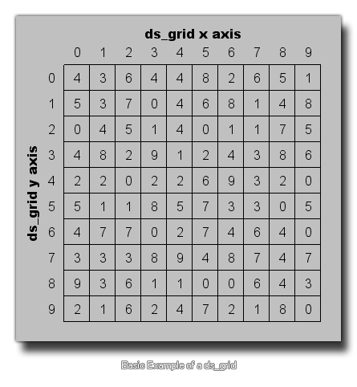

Un ds_grid es básicamente un tipo de matriz bidimensional. Usted define la cuadrícula configurando su ancho y alto de enteros, que luego establece el número total de "celdas" dentro de la grilla (el ancho y alto se multiplican) y estas celdas se usan para mantener diferentes valores de datos (números reales o cadenas). 
Este tipo de estructura le permite establecer y recuperar el valor de las celdas en la cuadrícula al dar su índice xey (que comienza con 0 para los ejes x e y y va hasta el ancho - 1 y la altura -1). Pero también puede establecer el valor en regiones de grillas específicas, agregar valores individuales y recuperar la suma, el valor máximo, el mínimo y el valor medio en una región determinada, haciendo que esta estructura de datos sea la más versátil de todas las disponibles para usted.
Al acceder a estructuras de datos de cuadrícula DS, siempre debe intentar usar valores enteros para la posición de la celda, y GameMaker Studio 2 todos los índices que no sean enteros si no lo hace. Si eso no es lo que necesita, tendrá que hacer el redondeo usted mismo antes de pasar el índice que desea verificar.
> Existen las siguientes funciones que se ocupan de las cuadrículas de DS.
- ds_grid_create
- ds_grid_destroy
- ds_grid_width
- ds_grid_height
- ds_grid_resize
- ds_grid_clear
- ds_grid_set
- ds_grid_set_disk
- ds_grid_set_grid_region
- ds_grid_set_region
- ds_grid_shuffle
- ds_grid_sort
- ds_grid_get
- ds_grid_get_max
- ds_grid_get_mean
- ds_grid_get_min
- ds_grid_get_sum
- ds_grid_get_disk_max
- ds_grid_get_disk_mean
- ds_grid_get_disk_min
- ds_grid_get_disk_sum
- ds_grid_add
- ds_grid_add_region
- ds_grid_add_disk
- ds_grid_add_grid_region
- ds_grid_multiply
- ds_grid_multiply_disk
- ds_grid_multiply_region
- ds_grid_multiply_grid_region
- ds_grid_value_exists
- ds_grid_value_disk_exists
- ds_grid_value_x
- ds_grid_value_y
- ds_grid_value_disk_x
- ds_grid_value_disk_y
- ds_grid_copy
- ds_grid_read
- ds_grid_write
Además de estas funciones específicas, todos pueden usar una expresión (llamada un descriptor de acceso ) para agregar o modificar el contenido de su ds_grid. Este acceso se parece a una matriz 2D con la siguiente sintaxis:
grid_index[# xpos, ypos]
Puede encontrar más información, además de ejemplos, de la página de Descripción de GML en Accesorios.